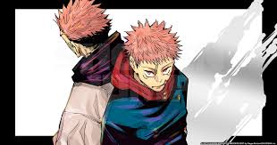
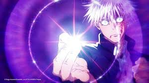

The World of Jujutsu Kaisen

Curses and Sorcerers
Jujutsu Kaisen follows high school student Yuji Itadori as he joins a secret organization of Jujutsu Sorcerers to eliminate a powerful Curse named Ryomen Sukuna. The story begins when Yuji swallows a rotting, cursed finger belonging to Sukuna to save his friends from a terrifying monster. By doing this, he becomes the host of the King of Curses, plunging him into a hidden world of supernatural danger. Under the guidance of the incredibly powerful teacher Satoru Gojo, Yuji enrolls at the Tokyo Jujutsu High School. He meets new allies like Megumi Fushiguro and Nobara Kugisaki, who each have their own intense reasons for fighting curses. Together, they must track down the rest of Sukuna's fingers before it is too late to stop him. The series does an amazing job of blending dark horror elements with fast-paced, modern action.
Stunning Animation and Action
One of the biggest reasons for the show's massive popularity is the incredible animation produced by Studio MAPPA. The fight choreography is incredibly fluid, making every battle feel impactful and visually stunning to watch. The power system, known as Cursed Energy, is complex but fascinating, allowing characters to use unique Cursed Techniques and ultimate moves called Domain Expansions. The villains are just as interesting as the heroes, often presenting real threats with terrifying and overwhelming abilities. The pacing of the story is very fast, meaning there is rarely a dull moment or unnecessary filler episodes. It takes classic Shonen tropes and gives them a much darker, grittier twist that appeals to older audiences. This anime has quickly become a standout hit of the current generation.
Key Characters
- Yuji Itadori
- Megumi Fushiguro
- Nobara Kugisaki
- Satoru Gojo

Check out the official manga on Shonen Jump or learn about the animation studio at Studio MAPPA.